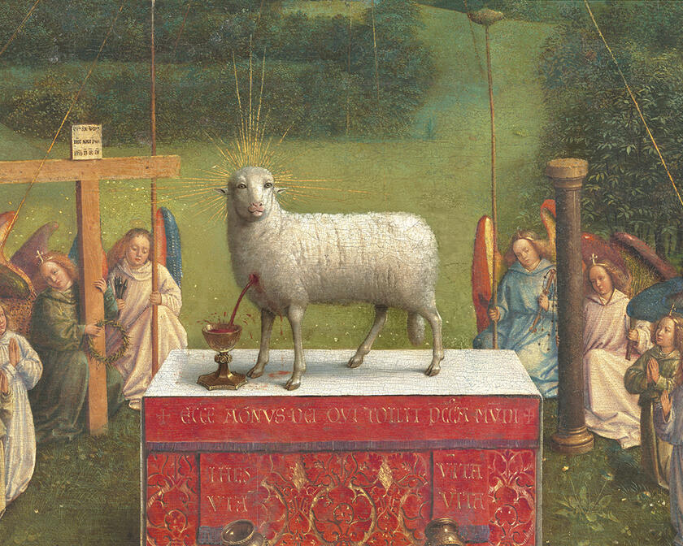
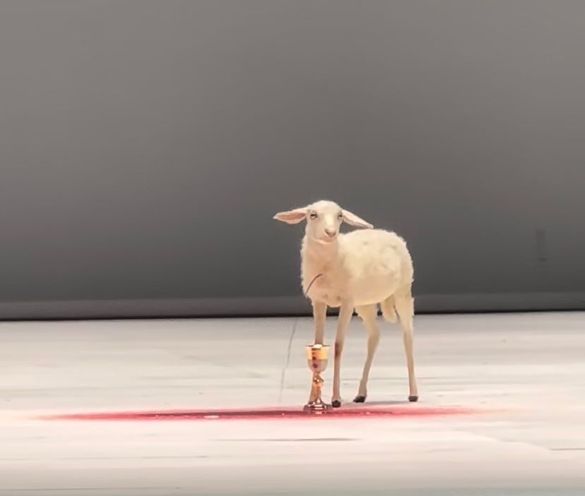

1:1 - RELIGION
"Has anyone else died for you?", billboard by Lana Del Rey ahead of her 2024 Coachella
performance.
To understand why the sacrificial lamb has been used as a symbol for suffering in social media
culture, one must start with its historical context. Lambs have been sacrificed throughout
history for various reasons, but especially in religion. Whether it was done for protection or
for the redemption of sins, it was always done for the benefit of humans. The purity of this
innocent animal, and the fact that it is incapable of wrongdoing, must have had a certain
allure. In a religious context, it is clear that only the innocent and pure are considered
worthy, which in this case means worthy of slaughter for the benefit of others.
An example of this is Passover, which was an important event in Jewish history during the
Israelites’ time of slavery in Egypt
.
During Passover, they believed that God sent ten plagues to convince the Pharaoh to release the
Israelites. The last plague would be the most horrific, killing every firstborn son in Egypt.
Through Moses, God provided a way for the Israelites to spare their sons by instructing them to
slaughter a “spotless lamb” and smear its blood on their doorposts.
In Christianity, Jesus’s sacrifice is widely compared to that of the lambs during Passover. As
written in Isaiah 53:7, Jesus "was like a lamb led to the slaughter, and as a sheep before its
shearers is silent, so he did not open his mouth." Like the lamb, Jesus was considered innocent
and without fault, resulting in a perfect sacrifice. His violent crucifixion would save humanity
from its sins. He was portrayed as the true Lamb of God, deciding his life is worth setting
aside for the fate of all humankind.
After this, the slaughter of innocent lambs for the redemption of sins became standard practice.
The lambs became placeholders for the sinners, and by their sacrifice, the sinners would be
saved. The lamb, however, never got a say in this matter; the suffering inflicted on this
blameless animal was only caused by its perfection, its purity, and its innocence. Slaughtering
something so pure seems like a sin in itself. Thereby, it seems like this practice redeems sins
by committing more of them.
“’ If someone brings a lamb as their sin offering, they are to bring a female without
defect.”
(Leviticus 4:32)


Adoration of the Mystic Lamb, Ghent Altarpiece (open view) by Hubert and Jan van Eyck, 1432.
Oil on twelve panels, 11 × 15 ft. (3.4 × 4.6 m). St. Bavo Cathedral, Ghent, Belgium.
Somehow, in all these religious references, the suffering of the lamb is romanticized. They make
it seem like it is the lamb's choice to be slaughtered, and there seems to be an absence of
pain. An example of this is the altarpiece “Adoration of the Mystic Lamb”, in Ghent by
Hubert and Jan van Eyck, which portrays a serene lamb standing on a podium while blood pours
from its neck. The lamb seems calm, almost happy, like it couldn’t wish for a better situation
to be in. There is almost a proud look in its eyes, making it seem like a sacrifice like this
would be an honour. I grew up on a farm and am therefore all too familiar with the process of
slaughtering animals, so I know this to be highly unrealistic. No animal wants to be
slaughtered.
Furthermore, the sacrifices of these lambs are only a temporary solution for whatever sins have
been committed. Which then produces a cycle of continued sin and sacrifice, a never-ending
stream of horror and slaughter. If there is such a simple and even socially acceptable way of
redeeming one's sins, why would anyone find the motivation to stop them? Instead of just
choosing to be a good person or commit to the rules of the religion they chose, they found a way
to trick the system. As displayed in the ominous sign funded by “Antioch Fellowship of the
Elect”, there are clear rules to follow if one hopes to avoid hell. Most of the ones
mentioned in the Bible are highly unrealistic and irrelevant in today's society, and there seems
to be a trend of choosing only the rules that are convenient for the majority of followers.
However, I find these threatening signs hard to take seriously when one can simply sacrifice a
lamb or repent, thereby being cleared of all sins. It seems like these rules are mostly used as
an excuse to condemn others for their choices, instead of taking responsibility for their own.
Hell isn’t much of a threat for those who don’t believe in it.
Sign by Dayton Street preachers, paid for by Antioch Fellowship of the Elect
1:2 - THE MADONNA - WHORE COMPLEX
The comparison between purity and worthiness is not only applied to animals, but also to women.
This can be seen in the “Madonna - whore complex,” first explained by Sigmund Freud.
While profoundly misogynistic, Freud still managed to produce a pretty accurate description of
how men view women. During his time as a psychoanalyst, his male patients came to him
complaining that they weren’t as attracted to their wives as they were to prostitutes. He
concluded that there's a dichotomy in men, which separates sexual desire from love and respect.
In other words, they either find them worthy of marriage or sexually desirable. Freud believed
that this split view of women is what causes the continued objectification of them.
“Where men love, they have no desire, and where they desire, they cannot love.”
(Sigmund Freud)
While this analysis might seem outdated in our contemporary society, there are still examples of
some men holding these views. In a podcast by Andrew Tate in conversation with some of his male
friends, they were determining women's worth based on their sexual partners. In their eyes, a
“high value woman” , worthy of marriage, is one able to obtain a “good man”.
In this context, a woman's worth is only determined by the man who chooses her and would
therefore be classified as a Madonna. However, these same men believe that it is a man's right
to have multiple sexual partners, which then poses a hypocrisy. They judge the women they find
sexually desirable, those who are free from their unrealistic expectations, but at the same time
need their existence to fulfil their messed-up fantasies.
The story of Eve and Mary in the bible can also be compared to the “Madonna, whore complex” .
Eve was always presented as a seductress who was disobedient and, therefore, the cause of Adam’s
sins. Her story was also the first time where guilt and shame were associated with womanhood,
and this image has followed us ever since. Mary, on the other hand, was portrayed as the image
of purity and obedience, a Virgin Mother who lives to serve God and raise his son. The
depictions of Eve and Mary are archetypes of what is deemed “good” or “bad” women. However, the
fates of these two seem equally bad, but in very different ways. One can choose to be blamed for
the sin of men or choose to sacrifice something to be respected by them. No wonder an increasing
number of women are choosing to stay single.